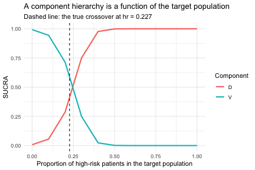

A disconnected network: NMA, ML-NMR, and cML-NMR compared
Source:vignettes/cpaic-disconnected-myeloma.Rmd
cpaic-disconnected-myeloma.RmdThis vignette walks through the situation cpaic exists for: a treatment network that is disconnected and whose trials enrolled different populations. We compare what a standard network meta-analysis can do, what a standard multilevel network meta-regression (ML-NMR) can do, and what the component-additive version (cML-NMR) adds.
The data here are entirely simulated. The clinical setting (maintenance therapy in newly diagnosed multiple myeloma) is used only for its vocabulary, because maintenance regimens are genuinely multi-component. No data, effect estimate, or result is taken from any publication. We set the true parameter values ourselves below, which is what lets us check whether each method recovers them.
The setting
Maintenance regimens combine components. Write Obs for
observation (the inactive comparator) and use four active components:
R (lenalidomide), V (bortezomib),
D (daratumumab), and I (ixazomib).
The trials split into two groups that share no treatment:
-
Sub-network 1, older trials against observation:
ObsvsR,ObsvsV. -
Sub-network 2, newer trials on a lenalidomide
backbone:
R+VvsR+D,R+VvsR+I.
No trial links the two. A decision maker nevertheless has to ask:
how does R+D compare with R?
That contrast crosses the gap.
The two groups also enrolled different patients. We use
high-risk cytogenetics (hr), a binary
variable: the newer trials enrolled a higher-risk population (45% versus
15%). A binary effect modifier is used deliberately, because integrating
a binary covariate as though it were normal would place integration
points outside {0, 1}, that is, integrate the model over
patients who cannot exist. cpaic gives a 0/1 covariate a Bernoulli
margin automatically.
treatments <- c("Obs", "R", "V", "R+V", "R+D", "R+I")
Cmat <- build_C_matrix(treatments, inactive = "Obs")
# TRUTH (log-odds ratio of response), which we will try to recover.
beta_true <- c(D = 0.30, I = 0.35, R = 0.45, V = 0.55) # main effects
# Bortezomib does WORSE in high-risk patients; daratumumab does BETTER.
gamma_true <- c(D = 0.60, I = 0.10, R = 0.05, V = -0.50) # x effect modifier
Cmat
#> D I R V
#> Obs 0 0 0 0
#> R 0 0 1 0
#> V 0 0 0 1
#> R+V 0 0 1 1
#> R+D 1 0 1 0
#> R+I 0 1 1 0The estimand is population-specific,
theta_t(x) = C_t' (beta + Gamma x), where x is
the proportion of high-risk patients in the target
population. Note already that V and D must
cross: theta_V(x) = 0.55 - 0.50x while
theta_D(x) = 0.30 + 0.60x, so they are equal at
x = 0.227 and swap order either side of it.
gen_arm <- function(study, trt, n, mu0, p_hr) {
hr <- rbinom(n, 1, p_hr)
tc <- Cmat[trt, ]
eta <- mu0 + 0.25 * hr + sum(tc * beta_true) + sum(tc * gamma_true) * hr
data.frame(.study = study, .trt = trt,
.y = rbinom(n, 1, plogis(eta)), hr = hr)
}
agg <- function(d) data.frame(.study = d$.study[1], .trt = d$.trt[1],
r = sum(d$.y), n = nrow(d), hr_mean = mean(d$hr))
# We hold IPD for two of our own trials, one in each sub-network. The other two
# trials are published aggregate data. The IPD trials are large, and enrolled a
# reasonable mix of risk groups, because a component by effect-modifier
# interaction is estimated from the covariate variation WITHIN a trial: a trial
# with only 15% high-risk patients carries little information about how the
# effect differs by risk, however many patients it has in total.
ipd <- rbind(gen_arm("OLD-2", "Obs", 1200, -0.2, 0.30), # IPD, sub-network 1
gen_arm("OLD-2", "V", 1200, -0.2, 0.30),
gen_arm("NEW-1", "R+V", 1200, 0.1, 0.50), # IPD, sub-network 2
gen_arm("NEW-1", "R+D", 1200, 0.1, 0.50))
agd <- rbind(agg(gen_arm("OLD-1", "Obs", 350, -0.3, 0.15)),
agg(gen_arm("OLD-1", "R", 350, -0.3, 0.15)),
agg(gen_arm("NEW-2", "R+V", 400, 0.0, 0.45)),
agg(gen_arm("NEW-2", "R+I", 400, 0.0, 0.45)))
agd
#> .study .trt r n hr_mean
#> 1 OLD-1 Obs 140 350 0.1228571
#> 2 OLD-1 R 183 350 0.1571429
#> 3 NEW-2 R+V 277 400 0.4175000
#> 4 NEW-2 R+I 307 400 0.43750001. Standard NMA cannot answer the question
edges <- data.frame(treat1 = c("R", "V", "R+D", "R+I"),
treat2 = c("Obs", "Obs", "R+V", "R+V"))
g <- igraph::graph_from_data_frame(edges, directed = FALSE)
igraph::components(g)$no # number of connected components
#> [1] 2Two components, so there is no path from R+D to
R. A standard NMA cannot estimate the contrast at all. It
is not that the estimate is imprecise; it does not exist.
2. ML-NMR adjusts the population, but does not bridge the gap
ML-NMR (Phillippo et al. 2020) is the right tool for the population problem: it fits the individual-level model to the IPD and integrates it over each aggregate study’s covariate distribution, so effect-modifier imbalance is handled correctly rather than through study-mean meta-regression.
But ML-NMR treats each regimen as an indivisible node.
R+D and R share no node and no trial connects
them, so nothing links the two sub-networks. A Bayesian fit will still
return a posterior for the contrast, and it will look perfectly healthy;
but it is the prior speaking, not the data. This is
precisely the trap Wigle et al. (2026)
warn about.
3. cML-NMR: bridge with components, adjust by integration
The regimens are not really indivisible. R+D and
R share the component R, and
R+V shares R and V with the old
trials. The additive component model turns shared components into shared
parameters, which reconnects the network by construction, while
the ML-NMR integration handles the population imbalance.
First: what is actually estimable?
Reconnecting a network does not guarantee that the effect you want is identified. Population adjustment is strictly harder than reconnection, because the component by effect-modifier interactions have to be identified too. Always check.
fit <- cmlnmr(ipd, agd,
effect_modifiers = "hr", # binary -> Bernoulli margin, automatic
inactive = "Obs", family = "binomial",
chains = 4, iter_warmup = 700, iter_sampling = 700, seed = 1)
estimable_effects_at(fit, newdata = data.frame(hr = 0.30))
#> treatment comparator estimable identified_by
#> 1 R Obs FALSE none
#> 2 R+D Obs FALSE none
#> 3 R+I Obs FALSE none
#> 4 R+V Obs FALSE none
#> 5 V Obs TRUE IPDRead the identified_by column. An effect identified only
from aggregate data is identified by a between-study gradient
across study means, which is ecological inference; an effect identified
from IPD is identified by within-study covariate variation.
They are not equal currency, and cpaic keeps them apart.
The cross-gap comparison, in a named target population
Ask for the cross-gap contrast directly, against
R as the reference. This matters: R+D versus
Obs and R versus Obs are each NOT
identified at a general target, because R is seen only in
an aggregate contrast and is therefore pinned down only at that study’s
covariate mean. Their difference, R+D versus
R, is the component D, and it IS identified.
cpaic returns NA for the two that are not identified and a
number for the one that is, which is exactly the behavior you want.
relative_effects(fit, reference = "R", newdata = data.frame(hr = 0.15))
#> Relative effects (OR, back-transformed)
#> Target population: hr = 0.15
#> treatment comparator estimate se lower upper pr_gt0
#> Obs R NA NA NA NA NA
#> R+D R 1.547 0.139 1.177 2.008 0.999
#> R+I R NA NA NA NA NA
#> R+V R 1.739 0.086 1.464 2.047 1.000
#> V R NA NA NA NA NA
#> NA = not uniquely estimable from this component design (see estimable_effects()).
relative_effects(fit, reference = "R", newdata = data.frame(hr = 0.60))
#> Relative effects (OR, back-transformed)
#> Target population: hr = 0.6
#> treatment comparator estimate se lower upper pr_gt0
#> Obs R NA NA NA NA NA
#> R+D R 2.120 0.139 1.591 2.781 1.000
#> R+I R NA NA NA NA NA
#> R+V R 1.352 0.098 1.112 1.638 0.999
#> V R NA NA NA NA NA
#> NA = not uniquely estimable from this component design (see estimable_effects()).
theta <- function(trt, x) sum(Cmat[trt, ] * (beta_true + gamma_true * x))
for (x in c(0.15, 0.60)) {
cat(sprintf("hr = %.2f: true log-OR(R+D vs R) = %+.3f\n",
x, theta("R+D", x) - theta("R", x)))
}
#> hr = 0.15: true log-OR(R+D vs R) = +0.390
#> hr = 0.60: true log-OR(R+D vs R) = +0.660The contrast that no trial measured, across a gap no comparator spans, is recovered; and it is recovered differently in the two target populations, because daratumumab is more effective in high-risk patients. A single population-free number would be wrong for at least one of them.
4. The hierarchy is population-specific
If component effects depend on the population, so do component rankings. The question is not “which component is best?” but “which component is best in this population?” (Wigle et al. 2026).
cpaic_ranks(fit, newdata = data.frame(hr = 0.05), what = "component")
#> Warning: Dropped from the hierarchy as not estimable in this target population: I, R.
#> Ranking them would rank the prior. See estimable_effects_at().
#> Population-adjusted component hierarchy
#> Target population: hr = 0.05
#> element estimate p_best median_rank mean_rank sucra
#> V 0.606 0.981 1 1.019 0.981
#> D 0.356 0.019 2 1.981 0.019
#> Not estimable in this population, so not ranked: I, R
#> Ranking metrics depend on the set ranked; report them with the effects, not instead.
cpaic_ranks(fit, newdata = data.frame(hr = 0.80), what = "component")
#> Warning: Dropped from the hierarchy as not estimable in this target population: I, R.
#> Ranking them would rank the prior. See estimable_effects_at().
#> Population-adjusted component hierarchy
#> Target population: hr = 0.8
#> element estimate p_best median_rank mean_rank sucra
#> D 0.882 1 1 1 1
#> V 0.185 0 2 2 0
#> Not estimable in this population, so not ranked: I, R
#> Ranking metrics depend on the set ranked; report them with the effects, not instead.Two things happen here, and both are the point.
First, R and I are
dropped. Neither is identified at a general target population:
R appears only in an aggregate contrast, and I
only in an aggregate contrast against R+V, so each is
pinned down only at its own study’s covariate mean. Ranking them would
rank the prior. This is Step 3 of the Wigle et al. workflow, now with an
estimable set that itself depends on the target.
Second, among the components that are identified,
the order reverses: V wins in a low-risk
population and D wins in a high-risk one.
curve <- rank_curve(fit, em = "hr", values = seq(0, 1, by = 0.1),
what = "component")
if (requireNamespace("ggplot2", quietly = TRUE)) {
library(ggplot2)
ggplot(curve, aes(hr, sucra, colour = element)) +
geom_line(linewidth = 1) +
geom_vline(xintercept = 0.227, linetype = "dashed") +
labs(x = "Proportion of high-risk patients in the target population",
y = "SUCRA", colour = "Component",
title = "A component hierarchy is a function of the target population",
subtitle = "Dashed line: the true crossover at hr = 0.227") +
theme_minimal()
}
What to take away
| Method | Adjusts the population | Bridges the disconnection | Cross-gap effect |
|---|---|---|---|
| Standard NMA | no | no | not estimable |
| ML-NMR | yes | no | prior-driven, not identified |
| cML-NMR | yes | yes, via shared components | estimable, and population-specific |
Two warnings, which are not optional reading.
- The bridging assumption is untestable. Reconnecting through shared components requires the component effects, and their interactions with the effect modifiers, to be the same in both sub-networks. There is by construction no cross-gap evidence with which to test that; it must be defended clinically (Veroniki et al. 2026).
-
Estimability is not automatic. As
RandIshow above, a contrast can be perfectly estimable as an aggregate-data component contrast and still not be estimable as a population-adjusted effect. Runestimable_effects_at()and believe what it says.